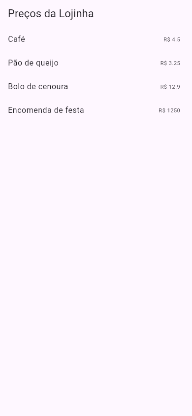
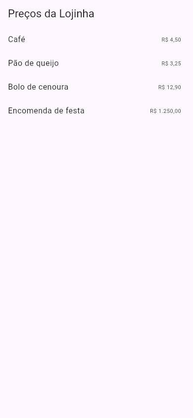

Flutter Pacotes do pub.dev
Ninguém escreve um app inteiro do zero. Formatar dinheiro em reais, falar com a internet, guardar dados no celular, abrir a câmera: para quase tudo isso existe um pacote pronto, escrito e testado por outras pessoas (muitos pelo próprio time do Flutter). Os pacotes de Dart e Flutter moram num site só, o pub.dev, e entram no seu projeto com um comando. Você já usou alguns nas aulas de Provider e Riverpod; aqui está o processo completo.
- Como achar e escolher um pacote no pub.dev (curtidas, pontos, plataformas, quem publicou).
- A instalar com
flutter pub adde a ler a saída. - O que muda no
pubspec.yaml, o que quer dizer o^da versão e para que serve opubspec.lock. - A usar o pacote com
import 'package:…': ointlformatando os preços da lojinha em reais. flutter pub get,outdated,upgradeeremove.- Os erros reais: o nome digitado errado e o pacote que não foi instalado.
Todas as saídas desta aula vieram do terminal da Ana, com o Flutter 3.47.7, num projeto chamado app.
A ideia: a loja de peças de montar
Pense num conjunto de blocos de montar. Você pode fazer tudo com os blocos básicos que vieram na caixa (o Flutter já traz muita coisa: Text, ListView, Navigator…). Mas existe uma loja de peças especiais: rodas, motores, luzes. Você escolhe a peça, ela chega com um manual, e encaixa no seu modelo.
- A loja é o pub.dev.
- A lista de compras do seu projeto é o pubspec.yaml: cada pacote é uma linha na seção
dependencies("dependências"). - O
flutter pubé o entregador: lê a lista, escolhe versões que combinem entre si e baixa tudo. - No código, o
import 'package:nome/…'é você pegando a peça da caixa.
1. Achar e escolher um pacote
Na busca do pub.dev, cada pacote aparece com alguns números. Antes de instalar, olhe:
| Onde olhar | O que diz |
|---|---|
| Likes (curtidas) | Quantas pessoas marcaram o pacote como útil. |
| Pub points (até 160) | Nota automática de qualidade: documentação, análise do código, suporte às plataformas, dependências em dia. |
| Downloads | Quanto é usado. Pacote muito usado tem mais respostas na internet quando dá problema. |
| Publisher (quem publicou) | Um selo de "verificado" ao lado do domínio (ex.: dart.dev, flutter.dev) diz que a organização é quem diz ser. |
| Platforms | Em quais plataformas funciona: Android, iOS, Web, Windows, macOS, Linux. Um pacote de câmera pode não funcionar na web, por exemplo. |
| Flutter Favorite | Selo dado pelo time do Flutter a pacotes de qualidade alta. |
| Data da última versão | Um pacote parado há anos pode não funcionar com o Flutter atual. |
Na página de cada pacote, as abas mais úteis são Readme (como usar), Example (um app de exemplo), Changelog (o que mudou em cada versão) e Installing (o comando para instalar).
2. Instalar: flutter pub add
A Ana quer mostrar os preços da lojinha do jeito brasileiro: R$ 4,50, com vírgula, e R$ 1.250,00, com ponto no milhar. Quem faz isso é o pacote intl (de internationalization, "internacionalização"), publicado pelo time do Dart. Na pasta do projeto:
$ cd app $ flutter pub add intl Resolving dependencies... Downloading packages... cupertino_icons 1.0.9 (2.0.0 available) + intl 0.20.3 material_color_utilities 0.13.0 (0.13.1 available) meta 1.18.3 (1.19.0 available) test_api 0.7.12 (0.7.15 available) Changed 1 dependency! 4 packages have newer versions incompatible with dependency constraints. Try `flutter pub outdated` for more information.
- Resolving dependencies...
- "Resolvendo as dependências": o
pubprocura uma combinação de versões em que todos os pacotes do projeto (e os pacotes que eles usam) se entendam. - Downloading packages...
- Baixa o que falta para uma pasta do seu usuário (o "cache do pub"). Cada versão é baixada uma vez só e serve para todos os seus projetos.
- + intl 0.20.3
- O
+marca o pacote novo: a versão 0.20.3, a mais nova que combina com o projeto. - cupertino_icons 1.0.9 (2.0.0 available)
- Pacotes que o projeto já tinha. Entre parênteses, uma versão mais nova que existe, mas que a faixa do
pubspec.yamlnão aceita. Não é erro. - Changed 1 dependency!
- "1 dependência mudou": o
intl. - 4 packages have newer versions incompatible with dependency constraints
- "4 pacotes têm versões mais novas fora das faixas permitidas": um aviso, não um erro. O comando sugerido,
flutter pub outdated, está na seção 5.
3. O pubspec.yaml e o pubspec.lock
O comando acrescentou uma linha na lista de compras:
dependencies:
flutter:
sdk: flutter
…
cupertino_icons: ^1.0.8
intl: ^0.20.3
- intl:
- O nome do pacote, exatamente como no pub.dev.
- ^0.20.3
- A faixa de versões aceitas. O
^("circunflexo") quer dizer "esta versão ou uma mais nova que não quebre o código". Para versões 1 ou maiores,^6.1.5aceita de 6.1.5 até antes de 7.0.0. Para versões que começam com 0, a regra aperta:^0.20.3aceita de 0.20.3 até antes de 0.21.0.
Além disso, apareceu (ou mudou) o arquivo pubspec.lock, com a versão exata de cada pacote baixado, incluindo os que vieram junto. Ele é a "nota fiscal": garante que, no computador de outra pessoa (ou no seu, daqui a um mês), o flutter pub get baixe exatamente as mesmas versões. Num app, os dois arquivos vão para o git; você não edita o .lock à mão.
pubspec.yaml à mão
Escreva a linha intl: ^0.20.3 embaixo de dependencies: (com 2 espaços na frente, o YAML liga para a indentação) e rode flutter pub get (seção 5). O VS Code e o Android Studio rodam o pub get sozinhos quando você salva o arquivo.
4. Usar o pacote: import 'package:…'
Primeiro, os preços sem o pacote, com o toString normal do Dart:
import 'package:flutter/material.dart';
void main() => runApp(const MaterialApp(
debugShowCheckedModeBanner: false,
home: TelaPrecos(),
));
class TelaPrecos extends StatelessWidget {
const TelaPrecos({super.key});
static const precos = {
'Café': 4.5,
'Pão de queijo': 3.25,
'Bolo de cenoura': 12.9,
'Encomenda de festa': 1250.0,
};
@override
Widget build(BuildContext context) {
return Scaffold(
appBar: AppBar(title: const Text('Preços da Lojinha')),
body: ListView(
children: [
for (final item in precos.entries)
ListTile(
title: Text(item.key),
trailing: Text('R\$ ${item.value}'),
),
],
),
);
}
}

Ficou estranho: R$ 4.5 (com ponto e sem o zero), R$ 12.9, R$ 1250. (Detalhe: a foto é do Flutter web, onde o 1250.0 vira 1250; num celular Android o mesmo código mostra 1250.0.)
Agora com o intl. Mudam três linhas: o import, a criação do formatador e o trailing:
import 'package:flutter/material.dart';
import 'package:intl/intl.dart';
void main() => runApp(const MaterialApp(
debugShowCheckedModeBanner: false,
home: TelaPrecos(),
));
class TelaPrecos extends StatelessWidget {
const TelaPrecos({super.key});
static const precos = {
'Café': 4.5,
'Pão de queijo': 3.25,
'Bolo de cenoura': 12.9,
'Encomenda de festa': 1250.0,
};
@override
Widget build(BuildContext context) {
final real = NumberFormat.currency(locale: 'pt_BR', symbol: r'R$');
return Scaffold(
appBar: AppBar(title: const Text('Preços da Lojinha')),
body: ListView(
children: [
for (final item in precos.entries)
ListTile(
title: Text(item.key),
trailing: Text(real.format(item.value)),
),
],
),
);
}
}
- import 'package:intl/intl.dart'
- Pega a peça da caixa. O formato é sempre
package:NOME_DO_PACOTE/ARQUIVO.dart; o Readme do pacote diz qual arquivo importar. - NumberFormat.currency(locale: 'pt_BR', symbol: r'R$')
- Um formatador de dinheiro (currency, "moeda") com as regras do português do Brasil: vírgula nos centavos, ponto nos milhares. O
rantes da string (string "crua") deixa o$ser só um caractere, e não o começo de uma interpolação. - real.format(item.value)
- Transforma o
doubleno texto formatado.

Missão: este é o app sem o pacote. Formate os preços em reais: acrescente o import 'package:intl/intl.dart';, crie o formatador no começo do build e use real.format(item.value) no trailing. (No DartPad, o intl já está disponível: não precisa de pub add.)
import 'package:flutter/material.dart';
void main() => runApp(const MaterialApp(
debugShowCheckedModeBanner: false,
home: TelaPrecos(),
));
class TelaPrecos extends StatelessWidget {
const TelaPrecos({super.key});
static const precos = {
'Café': 4.5,
'Pão de queijo': 3.25,
'Bolo de cenoura': 12.9,
'Encomenda de festa': 1250.0,
};
@override
Widget build(BuildContext context) {
return Scaffold(
appBar: AppBar(title: const Text('Preços da Lojinha')),
body: ListView(
children: [
for (final item in precos.entries)
ListTile(
title: Text(item.key),
trailing: Text('R\$ ${item.value}'),
),
],
),
);
}
}
import 'package:flutter/material.dart';
import 'package:intl/intl.dart';
void main() => runApp(const MaterialApp(
debugShowCheckedModeBanner: false,
home: TelaPrecos(),
));
class TelaPrecos extends StatelessWidget {
const TelaPrecos({super.key});
static const precos = {
'Café': 4.5,
'Pão de queijo': 3.25,
'Bolo de cenoura': 12.9,
'Encomenda de festa': 1250.0,
};
@override
Widget build(BuildContext context) {
final real = NumberFormat.currency(locale: 'pt_BR', symbol: r'R$');
return Scaffold(
appBar: AppBar(title: const Text('Preços da Lojinha')),
body: ListView(
children: [
for (final item in precos.entries)
ListTile(
title: Text(item.key),
trailing: Text(real.format(item.value)),
),
],
),
);
}
}
5. Os outros comandos do pub
flutter pub get: baixar o que a lista pede
Quando você baixa um projeto de outra pessoa (do GitHub, por exemplo) ou edita o pubspec.yaml à mão, rode flutter pub get. Ele lê a lista e baixa o que falta, sem mudar nada no pubspec.yaml:
$ flutter pub get Resolving dependencies... Downloading packages... cupertino_icons 1.0.9 (2.0.0 available) material_color_utilities 0.13.0 (0.13.1 available) meta 1.18.3 (1.19.0 available) test_api 0.7.12 (0.7.15 available) Got dependencies! 4 packages have newer versions incompatible with dependency constraints. Try `flutter pub outdated` for more information.
Got dependencies! ("peguei as dependências!") quer dizer que está tudo baixado. Aqui nada mudou, porque tudo já estava lá.
flutter pub outdated: o que está velho?
$ flutter pub outdated Showing outdated packages. [*] indicates versions that are not the latest available. Package Name Current Upgradable Resolvable Latest direct dependencies: cupertino_icons *1.0.9 *1.0.9 2.0.0 2.0.0 dev_dependencies: all up-to-date. transitive dependencies: material_color_utilities *0.13.0 *0.13.0 *0.13.0 0.13.1 meta *1.18.3 1.19.0 1.19.0 1.19.0 transitive dev_dependencies: test_api *0.7.12 *0.7.12 *0.7.12 0.7.15 1 upgradable dependency is locked (in pubspec.lock) to an older version. To update it, use `flutter pub upgrade`. 1 dependency is constrained to a version that is older than a resolvable version. To update it, edit pubspec.yaml, or run `flutter pub upgrade --major-versions`.
- Current / Upgradable / Resolvable / Latest
- Para cada pacote: a versão que você tem; a mais nova que o
flutter pub upgradeconsegue sem mexer nopubspec.yaml; a mais nova possível mexendo nele; a mais nova que existe. - [*]
- O asterisco marca versões que não são a mais nova.
- direct / transitive dependencies
- Diretas: as que estão no seu
pubspec.yaml. Transitivas: as que vieram "de carona", porque outros pacotes as usam. - cupertino_icons *1.0.9 … 2.0.0
- O
^1.0.8dopubspec.yamlnão aceita a 2.0.0 (versão "grande" nova). Por isso a última linha sugere o--major-versions. - meta … locked (in pubspec.lock)
- O
metapoderia ir para 1.19.0, mas opubspec.locko segura na 1.18.3 até você rodarflutter pub upgrade.
flutter pub upgrade e flutter pub remove
flutter pub upgrade sobe os pacotes para a versão mais nova dentro da faixa do ^. flutter pub upgrade --major-versions vai além, mudando o próprio pubspec.yaml para aceitar uma versão "grande" nova (e aí o seu código pode precisar de ajustes: leia o Changelog). Para tirar um pacote:
$ flutter pub remove intl Resolving dependencies... Downloading packages... cupertino_icons 1.0.9 (2.0.0 available) material_color_utilities 0.13.0 (0.13.1 available) meta 1.18.3 (1.19.0 available) test_api 0.7.12 (0.7.15 available) These packages are no longer being depended on: - intl 0.20.3 Changed 1 dependency! 4 packages have newer versions incompatible with dependency constraints. Try `flutter pub outdated` for more information.
"Estes pacotes não são mais usados: intl". A linha sumiu do pubspec.yaml. Se algum arquivo ainda tiver o import 'package:intl/…', o app para de compilar (veja Quando dá errado).
dev_dependencies: pacotes só para quem desenvolve
Alguns pacotes só servem durante o desenvolvimento: testes, regras de estilo, geradores de código. Eles vão numa seção separada, dev_dependencies, e não entram no app que vai para a loja. O projeto do flutter create já vem com dois: flutter_test e flutter_lints. Para instalar um pacote nessa seção, use flutter pub add --dev NOME (ou flutter pub add dev:NOME).
Formas diferentes de instalar
| Jeito | Quando usar |
|---|---|
flutter pub add nome | O normal: escolhe a versão mais nova que combina e escreve a linha por você |
flutter pub add 'nome:^1.2.0' | Quando o tutorial pede uma versão específica |
Editar o pubspec.yaml + flutter pub get | Quando quer ver e controlar a linha; o editor roda o get ao salvar |
flutter pub add --dev nome | Pacotes só de desenvolvimento |
O "Experimente" deste guia roda no DartPad, que aceita só uma lista de pacotes populares (entre eles intl, provider, flutter_riverpod e flutter_bloc). Lá não existe pubspec.yaml: basta o import. No seu computador, o flutter pub add é obrigatório.
Quando dá errado
$ flutter pub add provder Because app depends on provder any which doesn't exist (could not find package provder at https://pub.dev), version solving failed. Failed to update packages.
- Because app depends on provder any which doesn't exist
- "Como
app(o seu projeto) depende deprovder, em qualquer versão (any), e ele não existe…" - could not find package provder at https://pub.dev
- "…não achei o pacote
provderno pub.dev…" - version solving failed / Failed to update packages
- "…a escolha das versões falhou." Nada foi mudado no
pubspec.yaml.
Como consertar: copie o nome da aba Installing do pub.dev. Os nomes usam só letras minúsculas, números e _ (ex.: flutter_riverpod, shared_preferences).
A Ana copiou o código dos preços para um projeto novo e esqueceu o flutter pub add intl. Na hora de compilar:
Error: Couldn't resolve the package 'intl' in 'package:intl/intl.dart'.
lib/main.dart:2:8: Error: Not found: 'package:intl/intl.dart'
import 'package:intl/intl.dart';
^
lib/main.dart:21:18: Error: The getter 'NumberFormat' isn't defined for the type 'TelaPrecos'.
- 'TelaPrecos' is from 'package:app/main.dart' ('lib/main.dart').
Try correcting the name to the name of an existing getter, or defining a getter or field named 'NumberFormat'.
final real = NumberFormat.currency(locale: 'pt_BR', symbol: r'R$');
^^^^^^^^^^^^
- Couldn't resolve the package 'intl'
- "Não consegui achar o pacote
intl": ele não está nopubspec.yaml. - lib/main.dart:2:8: Error: Not found: 'package:intl/intl.dart'
- A linha 2, coluna 8: o
import. O^aponta o começo do endereço. - The getter 'NumberFormat' isn't defined
- Consequência do primeiro erro: sem o import, o Dart não conhece o
NumberFormate acha que é um "getter" (uma propriedade) da sua classe. Corrija o primeiro erro e este some junto.
Como consertar: flutter pub add intl (ou, se a linha já está no pubspec.yaml, flutter pub get). Regra geral: quando vários erros aparecem juntos, leia e conserte o primeiro.
Um pacote que mexe com o aparelho (câmera, GPS, arquivos) pode não ter suporte para todas as plataformas. Confira o quadro Platforms do pub.dev antes de instalar; a aula Recursos do Aparelho mostra o caso da câmera e da localização.
Referência rápida
| Comando | O que faz |
|---|---|
flutter pub add nome | Instala e escreve no pubspec.yaml |
flutter pub add --dev nome | Instala em dev_dependencies |
flutter pub get | Baixa o que o pubspec.yaml pede |
flutter pub outdated | Mostra o que tem versão mais nova |
flutter pub upgrade | Atualiza dentro das faixas do ^ |
flutter pub upgrade --major-versions | Atualiza também as versões "grandes" |
flutter pub remove nome | Tira o pacote |
flutter pub deps | Mostra a árvore de dependências |
import 'package:nome/arquivo.dart'; | Usa o pacote no código |
Exercícios
1. Complete o import
2. No pubspec.yaml está provider: ^6.1.5. Qual destas versões o pub pode usar?
3. Você baixou um projeto do GitHub e o editor sublinha de vermelho todos os import 'package:…'. Qual comando resolve?
4. Para que serve o pubspec.lock?
Missão final: o milhar com ponto
Missão: a tela mostra Cafés vendidos: 12345. Use o intl para mostrar 12.345: importe o pacote, crie final numero = NumberFormat.decimalPattern('pt_BR'); no começo do build e use ${numero.format(vendidos)} no texto. Atenção: o Center e o Text deixam de poder ser const (o const vai para o TextStyle).
import 'package:flutter/material.dart';
void main() => runApp(const MaterialApp(
debugShowCheckedModeBanner: false,
home: TelaVendas(),
));
class TelaVendas extends StatelessWidget {
const TelaVendas({super.key});
static const vendidos = 12345;
@override
Widget build(BuildContext context) {
return Scaffold(
appBar: AppBar(title: const Text('Vendas do ano')),
body: const Center(
child: Text(
'Cafés vendidos: $vendidos',
style: TextStyle(fontSize: 24),
),
),
);
}
}
import 'package:flutter/material.dart';
import 'package:intl/intl.dart';
void main() => runApp(const MaterialApp(
debugShowCheckedModeBanner: false,
home: TelaVendas(),
));
class TelaVendas extends StatelessWidget {
const TelaVendas({super.key});
static const vendidos = 12345;
@override
Widget build(BuildContext context) {
final numero = NumberFormat.decimalPattern('pt_BR');
return Scaffold(
appBar: AppBar(title: const Text('Vendas do ano')),
body: Center(
child: Text(
'Cafés vendidos: ${numero.format(vendidos)}',
style: const TextStyle(fontSize: 24),
),
),
);
}
}
Resumo
- Os pacotes de Dart e Flutter ficam no pub.dev; escolha olhando curtidas, pontos, plataformas, quem publicou e a data.
flutter pub add nomeinstala e escrevenome: ^versãonopubspec.yaml; opubspec.lockguarda as versões exatas.- No código:
import 'package:nome/arquivo.dart';. pub getbaixa o que a lista pede;outdatedmostra o que envelheceu;upgradeatualiza;removetira.- Nome errado: "could not find package"; pacote não instalado: o
importnão acha o arquivo.